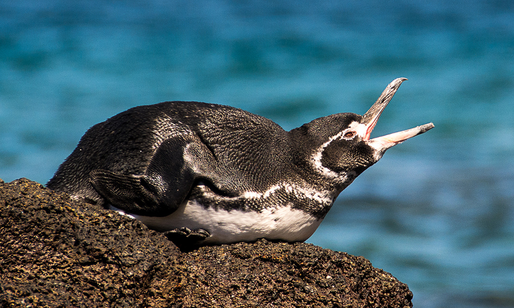

อิกัวนาทะเลกาลาปาโกส
Binomial name: Amblyrhynchus cristatus
Kingdom: Animalia
Phylum: Chordata
Class: Reptilia
Order: Squamata
Family: Iguanidae
Genus: Amblyrhynchus
Species: A. cristatus

อิกัวนาทะเลกาลาปาโกส

อิกัวนาทะเล หรือ อิกัวนาทะเลกาลาปาโกส (อังกฤษ: marine iguana, Galápagos marine iguana; ชื่อวิทยาศาสตร์: Amblyrhynchus cristatus) เป็นสัตว์เลื้อยคลานทะเลจำพวกกิ้งก่าชนิดหนึ่งในวงศ์อิกัวนา (Iguanidae) จัดเป็นกิ้งก่าเพียงชนิดเดียวในปัจจุบันนี้ที่พบอาศัยอยู่ได้ในทะเล และเป็นสัตว์เพียงชนิดเดียวเท่านั้นที่อยู่ในสกุล Amblyrhynchus ลักษณะและพฤติกรรม อิกัวนาทะเลมีลำตัวสีดำหรือสีคล้ำตลอดทั้งตัว โดยมีสีเดียวตลอดทั้งตัว และถือเป็นสัตว์ถิ่นเดียวที่พบได้เฉพาะเกาะต่าง ๆ ของหมู่เกาะกาลาปาโกส ในเขตแดนประเทศเอกวาดอร์ ในทวีปอเมริกาใต้เท่านั้น ขนาดเมื่อโตเต็มที่ในตัวผู้มีน้ำหนัก 12-13 กิโลกรัม โดยพบได้ในตอนใต้ของเกาะอีซาเบลลา ซึ่งเป็นเกาะที่มีขนาดใหญ่ที่สุดของหมู่เกาะกาลาปาโกส และขนาดเล็กที่สุดมีน้ำหนักเพียง 1-2 กิโลกรัม ที่เกาะจีโนเบซา อิกัวนาทะเลเป็นสัตว์เลื้อยคลานที่กินพืชเป็นอาหารเท่านั้น ไม่กินสัตว์หรือแมลงเป็นอาหาร แม้จะเป็นแมลงตัวเล็ก ๆ ก็ตาม โดยจะดำน้ำลงไปกินสาหร่ายหรือตะไคร่น้ำตามโขดหินใต้ทะเล มีความสามารถดำน้ำได้ลึกถึง 9 เมตร (30 ฟุต) ระบบย่อยอาหารสามารถย่อยพืชได้เป็นอย่างดีเพราะลำไส้ส่วนโคลอนมีการปรับเพื่อย่อยอาหารประเภทพืชโดยเฉพาะ ด้วยการแบ่งพื้นที่ภายในลำไส้เป็นห้องย่อยเพื่อเพิ่มพื้นที่ผิวในการดูดซึม และเป็นที่อยู่อาศัยของหนอนตัวกลมและจุลินทรีย์ที่ช่วยย่อยเซลลูโลสด้วย ขยายพันธฺ์ด้วยการวางไข่ อิกัวนาทะเลเป็นสัตว์ที่ได้รับปริมาณเกลือจากน้ำทะเลเป็นอย่างมากในแต่ละวัน จึงมีวิธีการกำจัดเกลือออกจากร่างกายด้วยการพ่นออกทางรูจมูกเมื่ออยู่บนบกเป็นฝอยน้ำเหมือนจาม F และถึงแม้จะว่ายน้ำและดำน้ำเก่งก็ตาม แต่อิกัวนาทะเลมักจะเกาะอยู่นิ่ง ๆ เป็นกลุ่มตามโขดหินริมทะเล เพื่ออาบแดดและเพื่อรักษาอุณหภูมิในร่างกาย ซึ่งในช่วงฤดูหนาวที่มีอากาศเย็นก็อาจส่งผลกระทบได้บ้าง แต่ก็ไม่ส่งผลมากนัก เนื่องจากหมู่เกาะกาลาปาโกสตั้งอยู่ในเขตเส้นศูนย์สูตรอยู่แล้ว สภาพภูมิอากาศจึงไม่ค่อยเปลี่ยนแปลงมากนัก หรืออาจพบได้บ้างตามป่าชายเลน ชายหาด หรือแอ่งน้ำขังตามริมทะเล ขณะอาบแดดเป็นกลุ่ม ขณะว่ายน้ำ แม้จะมีรูปร่างหน้าตาน่ากลัว แต่ที่จริงแล้วอิกัวนาทะเลเป็นสัตว์ที่รักสงบ ไม่มีนิสัยดุร้าย จึงมักมีกิ้งก่าตัวเล็ก ๆ มาเกาะตามส่วนหัวหรือบนหลังเพื่อจับแมลงหรือมดที่ไต่ตอมใกล้ ๆ ตัวอิกัวนาทะเลกินเป็นอาหาร โดยที่อิกัวนาทะเลจะไม่ทำอันตรายต่อกิ้งก่าเหล่านี้ แต่อิกัวนาทะเลก็มีศัตรูตามธรรมชาติ คือ นกกระสานวล ที่จับอิกัวนาทะเลขนาดเล็กกินเป็นอาหาร และนี่ก็เป็นอีกหนึ่งสาเหตุที่ทำให้อิกัวนาทะเลมักไม่ค่อยเคลื่อนไหวร่างกาย และจากหน้าตาและลักษณะที่โดดเด่น จึงถือเป็นแรงบันดาลใจให้ผู้สร้างภาพยนตร์ชาวญี่ปุ่นใช้เป็นต้นแบบของก็อตซิลลา ตัวละครสัตว์ประหลาดชื่อดังสัญชาติญี่ปุ่นอีกด้วยF
ชนิดของสัตว์ในเกาะกาลาปากอส

Finch Dawin
นกตัวที่ 1

Grapsus Crapsus
ปูตัวที่ 1

Marine Iguana
อิกัวน่าตัวที่ 1

Galápagos Penguin
เพนกวินตัวที่ 1

Galápagos Tortoise
เต่าตัวที่ 1

Bluebooby
นกตัวที่ 2

Magnificent Frigatebird
นกตัวที่ 3

Red-Footed Booby
นกตัวที่ 4

Flightless Cormorant
นกตัวที่ 5

Galápagos Sea Lion
แมวน้ำตัวที่ 1